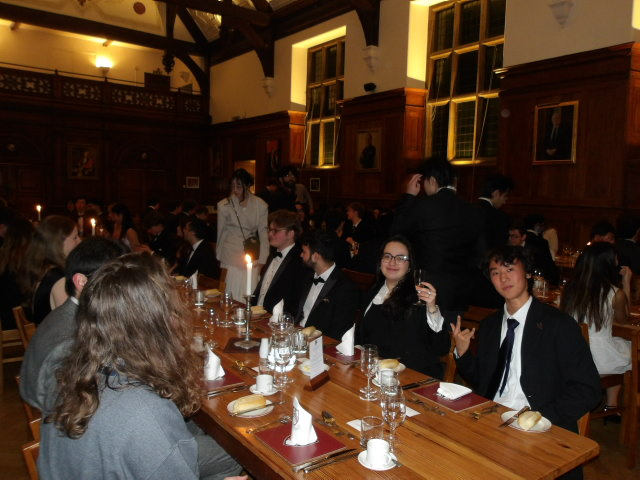
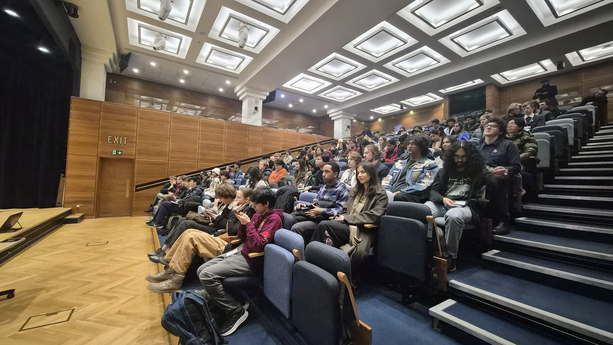
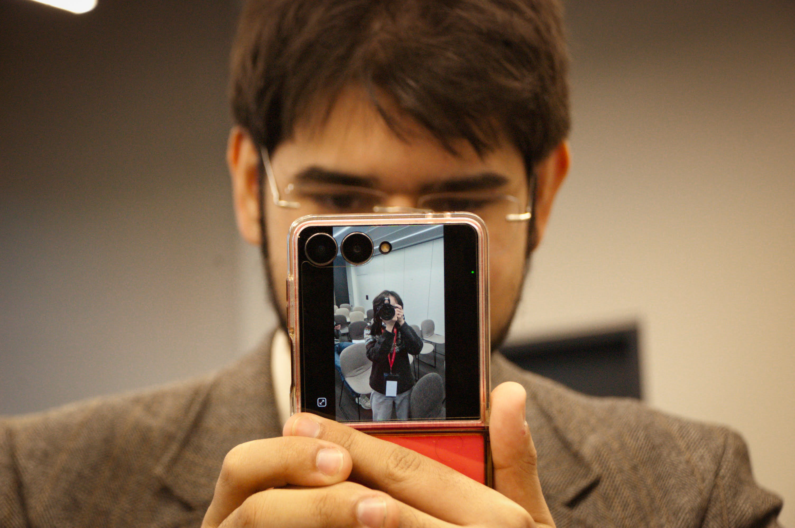
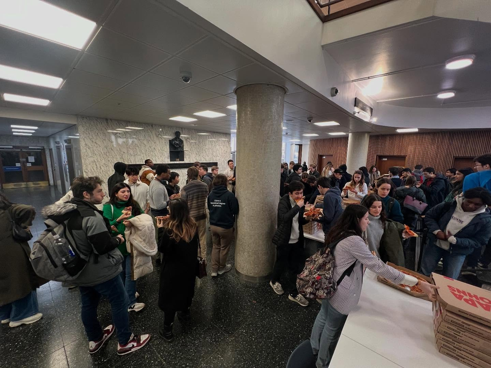
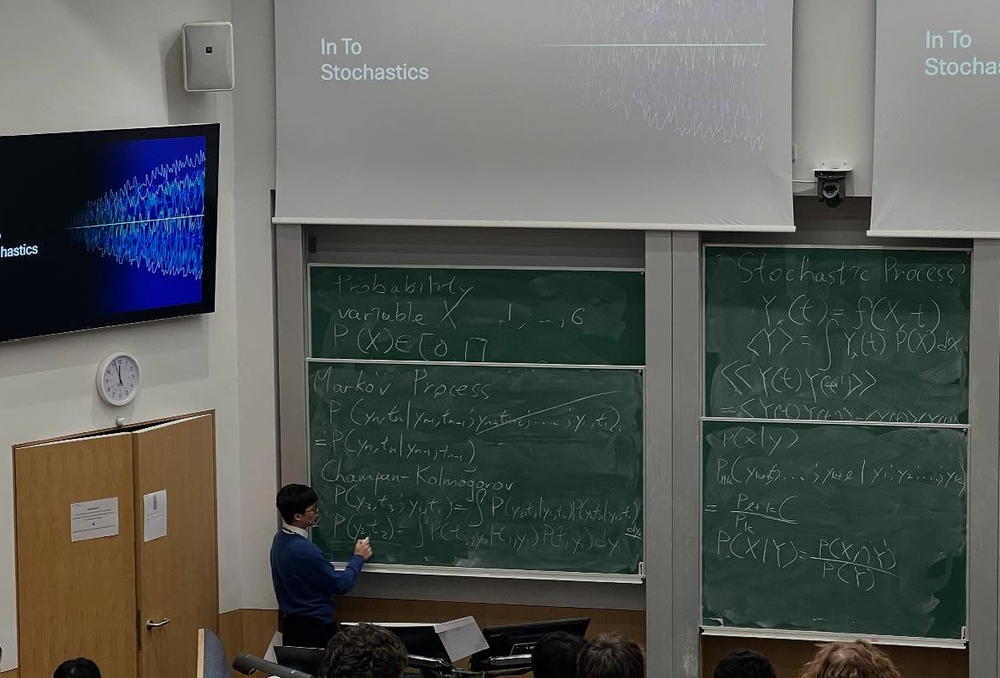

From an intimate gathering of London universities to a major national event spanning multiple cities, explore the history, press coverage, and photo galleries of our previous conference editions.
2026: The National Expansion
In 2026, QUIRK+ expanded into a two-part national event. Part I was hosted at King's College London's Bush House, followed by Part II at the University of Cambridge's Ray Dolby Centre. The events brought together over 500 participants, featuring expansive sponsor stalls, student lectures, and an exclusive formal dinner at Selwyn College.






2025: The Inaugural QUIRK
The original London Universities Physics Conference was founded by the physics societies of QMUL, UCL, Imperial, Royal Holloway, and KCL. Hosted at Imperial College's Blackett Laboratory, it set the foundation for student-led academic networking, featuring early-career advice, lectures, and a highly collaborative atmosphere.


